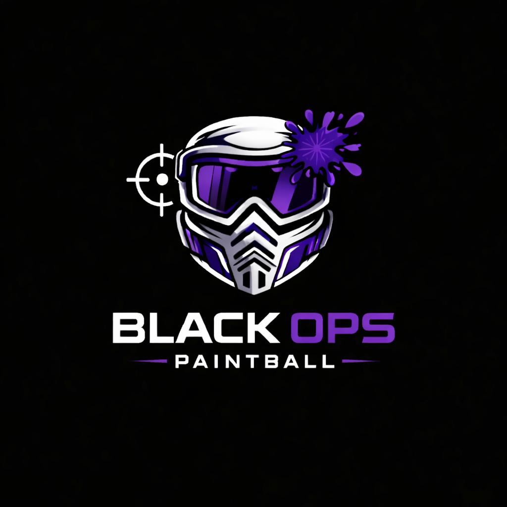

La aplicación necesita iniciar su servidor
Para guardar cuentas, reservas e inventario, primero haz doble clic en start.bat. Se abrirá la aplicación y creará la base de datos y el archivo Excel automáticamente.
Si el botón no abre la página, inicia start.bat y vuelve a intentarlo.